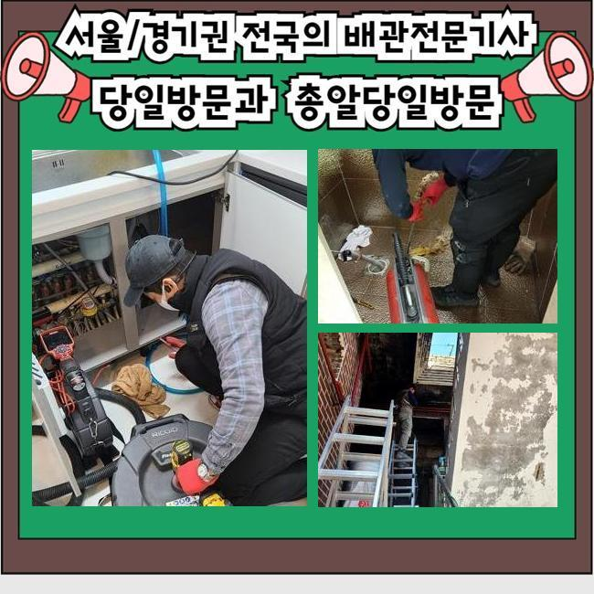
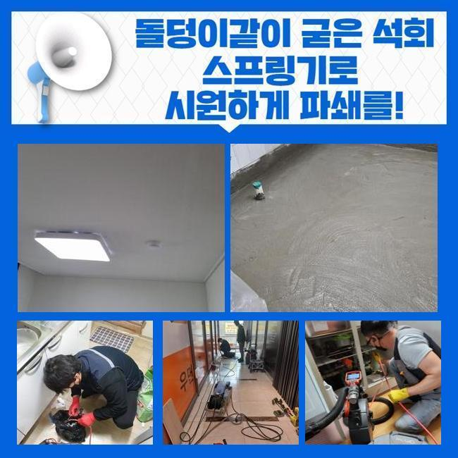
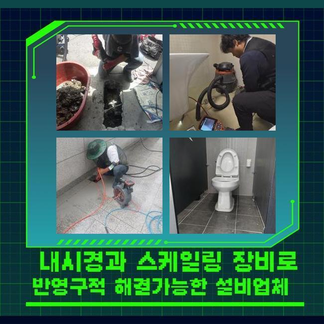
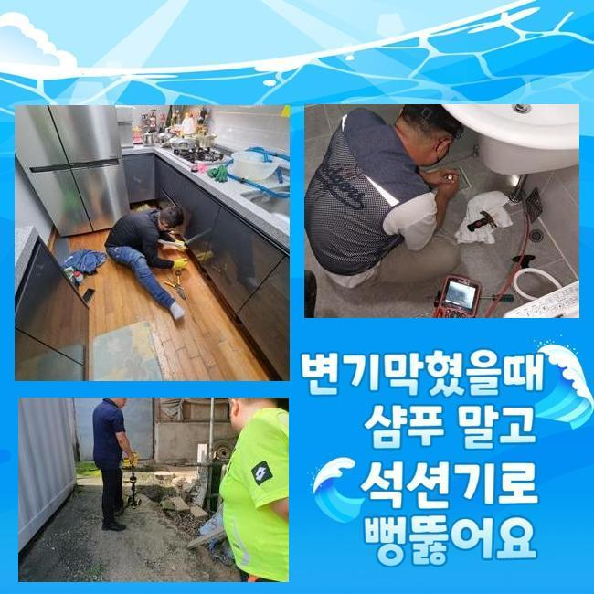
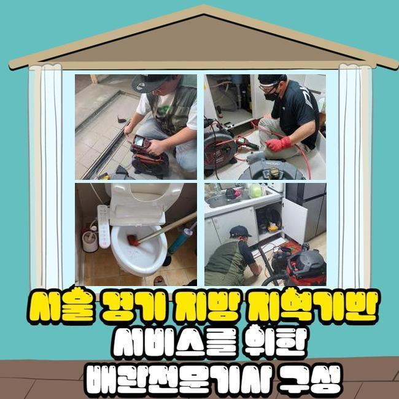
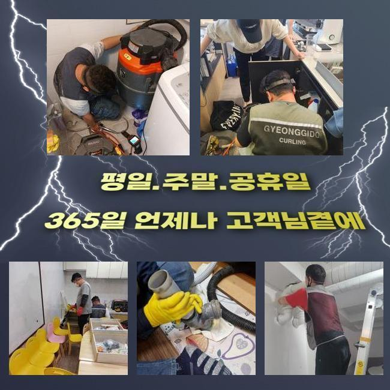
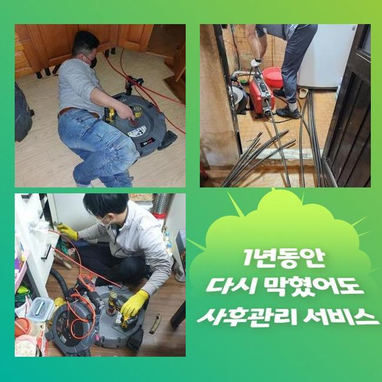

🏠 천안 와촌동변기뚫음 입장면 하수구뚫어주는곳 설비출장
천안 입장면 변기막힘 전문 시공 후기

📋 작업 개요
- 위치: 천안 입장면, 입장면, 천안
- 서비스 유형: 변기막힘, 하수구막힘, 배관막힘, 역류해결, 뚫는업체, 배관청소, 악취차단
- 작업 일시: 2025. 4. 13. 8:59
- 업체명: 하수구수사대 (010-5615-2118)
🔍 문제 상황
천안 와촌동변기뚫음 입장면 하수구뚫어주는곳 설비출장
높은 건물에서 하수가 울컥대고 나오는 역류가 벌어졌다는 이야기를 듣고 보완을 해드리고자 해당 장소에 찾아갔습니다
단독주택이 아닌 경우라면 건물에 깔려있는 모든 배관들이 한곳으로 모이는 구조를 띠고 있는 현장들이 대부분인데요
어떠한 구간에서 결함이 탄생했다고 해도 또다른 배수로도 고장이 나서 많은 거주자분들이 어려움을 겪을 수도 있습니다
이번 시공을 했던 곳은 여러 상가들이 성업 중인 상가였는데 예기치 않게 하수관 기능이 마비되다보니 손님들을 받지 못해서 불편감과 동시에 경제적 곤란까지 첩첩산중이라고 느끼셨다고 합니다
상가에서 배관 관련 장애가 반복적으로 유발될 시에는 건물의 모든 이용자들에게 어려움을 야기할 수 있다보니 서둘러 행동하여 설치된 하수구로 향합니다
건물에 도착하면 피해 정도가 강력한 장소먼저 들러서 물내림의 정도를 체크합니다
이러한 통수 테스트는 물을 세게 틀어보고 아래 방향으로 물이 얼마나 빨리 나가는지를 테스트해서 성능을 검토하는건데요
꼴꼴 흘러나가는 스피드가 당연 낮아진데다 심지어 중간중간 흐름의 끊김이 나타난다는 것을 눈으로 확인할 수 있었네요
여러 장소에서 하수도의 불통이 빚어진 것은 사실 배관의 내면에 생각보다 많은 고착물들이 부착되어 있을 것이 눈에 선했습니다

🔎 원인 분석
💡 전문가 진단: 정밀 진단 장비를 사용하여 슬러지의 고착 여부를 판명하고 타격/세척 작업을 실시했습니다.
부피가 점점 불어났을 오물들을 모두 삭제시키지 못한다면 다른 파이프라인 역시 피해가 확대될 수 있는 부분이라 시간을 최대한 단축시키려 노력했습니다
하수구 장애를 초래하는 원인들은 물이 나가는 정상경로를 차단하고 있는 오물일 때가 많으니 전부 확인해서 긁어내고 없애는 청소에 들어가야 합니다
수도시설을 활용하는 도중에 불순물이 만들어지게 되는데 물과 혼합된 채 방출이 되어버린다면 일정한 섹션에 쌓이게돼서 심각한 장애물으로 전락합니다
일부러 생활 쓰레기를 배출하지 않아도 생활용수 속의 석회물질 미네랄 성분이 고착화되기도 해요
내측 현황을 탐방해보니 체모나 기름 덩어리처럼 물살에 딸려간 이상물질들이 축적된 것이 분명했습니다
이렇게 똘똘 뭉쳐있다가 심지어 밀집도도 높아진다면 제거하기가 더욱 난감합니다
이동하려는 물을 붙든다면 고이다가 깊숙한 곳에서 부패된 물의 역류도 맞이해야만 하는 힘든 케이스로 진행될 수 있습니다
이물질은 물과 닿으면 위생적으로도 빠르게 나빠질만한 판을 깔아주는 격이며 곰팡이와도 결합되다보니 불쾌한 악취가 동반돼서 더 곤란해지기도 합니다
보통 하수가 이동하는 배관은 언제나 습기가 차있기에 오물도 더 빨리 썩어가며 냄새분자가 확 퍼져버려요
노폐물이 누적된 위치들이 다발적일 수 있다보니 총 문제점들을 발본색원해줘야 합니다
한곳만 막혀있다면 석션장치만 가동시키더라도 통수를 만들 수 있는데요

🔧 작업 과정
배배 꼬여있는 상태거나 연결점이 다수 자리하면 물살이 방해받는 구간들이 많이 생성되어 있을 수 있습니다
배관의 모양이나 이물질의 견고함과 크기를 관찰하여 인식해야 합니다
아무리 물을 쏘아대더라도 물의 흐름이 재생되지 못하면 과하게 커져서 빈틈이 없다거나 단단해졌을 수 있어요
이와같은 심한 막힘을 풀어내기 위해서는 통수를 끊기게 한 대상을 표적하여 정화하는 작업이 필요합니다
방해물의 강직도와 같은 실황을 파악해야만 작업 툴도 결정할 수 있습니다
저희가 내부탐방용으로 활용하는 내시경은 깊고 어둑해서 안보이는 배관을 곧바로 중개를 해주는 장비인데 오물이 누적된 지점과 말라붙은 오염원의 특징을 알아차리게 도와줍니다
카메라를 중간중간 주입해서 체크하면 작업이 그밖의 문제점들은 없는지 신중함을 기할 수 있어서 하자나 재발을 줄일 수 있겠죠
시공 전에 배관의 상태를 사전점검하기 위한 목적과 앞선 작업이 깔끔히 끝났는지 더블체크 해주기 위한 용도로 카메라를 쓰고 있습니다
파이프라인을 쭉 탐색해봤더니 중앙에 자리한 메인관로 쪽도 그렇지만 넓은 범주에 걸쳐서 오물이 누적되어 있음을 목격하게 됐습니다
비교적 가벼운 막힘이라면 진동을 갖고 있는 스프링 장비나 샤프트 장치로 해당 찌꺼기를 긁고 잘라내서 막힘을 소강시킬 수 있겠습니다
야외 배관과의 연결점에 넓은 범위로 퍼져서 침전물들이 쭉 말라붙어있다면 드라마틱한 차이점을 볼 수 없을 것입니다
구간이 넓으니 그 공간에 쌓인 미네랄 석회물질도 많이 통과하다보니 소박한 석션으로는 외부배관은 감당이 불가하게 됩니다
사이즈와 규격이 큰 편이라면 강력한 파워를 지닌 고압수를 분사하는 방향을 고려해야 합니다
이 기법은 배관의 길이와 크기를 고려한 노즐을 끼운 채 물을 쏘게 되는 원리이며 견고화가 이뤄진 이물질까지 모두 삭제시킵니다
설치된 배관들은 보통 생각보다 강하지 못해서 현장에 적합한 세기를 여러 단서를 보고 정하고 작업해요
하수구를 타격하기 전에 관로가 얼마나 견고한지에 대해서도 사전검진을 충분히 거친 후에 본 시공에 들어갑니다
장소마다 강도 조절을 하면서 연속적으로 세정 작업을 담당해드리면서 답답하게 관로를 숨막히게 만들었던 노폐물들을 맑고 상쾌하게 덜어낼 수 있었어요


✅ 작업 완료
마무리 단계로 모든 이물이 잔여량이 없는지를 알아보고 나면 기능을 원상복구 시켰다고 말씀드려도 됩니다
물이 원활하게 이동하는지 배수 검사까지 도맡아드리고는 그밖의 의문점이 있다면 알기 쉽게 설명드립니다
마감 정리가 잘됐나 보고 부실함 없이 시공이 완수되었나 더블체크를 놓치지 않습니다
다수의 장비를 동원하며 높은 만족도를 얻으시도록 하수구의 불능 사태를 부드럽게 풀어나갑니다
하수시설에 연관된 궁금한 점이 있으시더라도 연락을 편하게 걸어주세요




⚠️ 하수구 배관 막힘 예방 및 관리 가이드
- ✅ 머리카락, 비닐, 물티슈 등 물에 분해되지 않는 이물질은 하수구 유입을 절대 금지해 주세요.
- ✅ 하수구 거름망을 씌우고 모여진 이물질은 주기적으로 쓰레기통에 바로 비워주셔야 합니다.
- ✅ 배관 노후가 심할 경우 이물질이 더 쉽게 걸리므로 주기적인 배관 세척(고압세척 등)을 권장합니다.
- ✅ 작업 후 1년 이내 재발 시 하수구수사대에서 무상 A/S 보증 서비스를 제공합니다.
💡 핵심 정리
- 확실한 장비 작업(내시경 점검 및 샤프트 스케일링)으로 원인을 뿌리 뽑습니다.
- 작업 후 1년 이내에 동일한 부위 재발 시 100% 무상 A/S 서비스를 보장합니다.
- 서울 · 경기 · 인천 전 지역에 24시간 언제든 긴급 출동할 수 있도록 항시 대기 중입니다.
❓ 자주 묻는 질문 (FAQ)
🚨 천안 입장면 변기막힘 문제로 고민이신가요?
정확한 원인 진단과 확실한 시공으로 재발 없는 해결을 약속드립니다.
24시간 긴급 출동 | 서울 · 경기 · 인천 전지역 | 1년 내 재발 시 무상 A/S